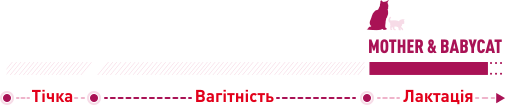
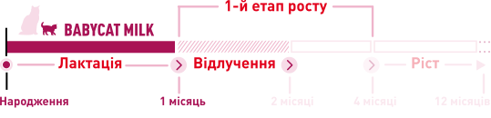
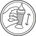
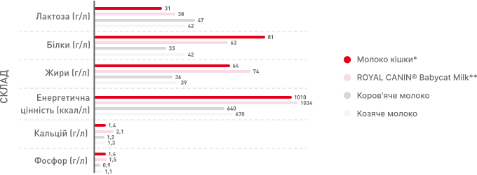
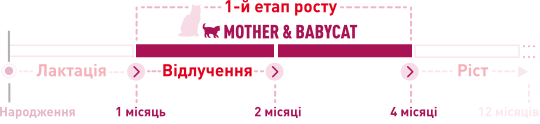
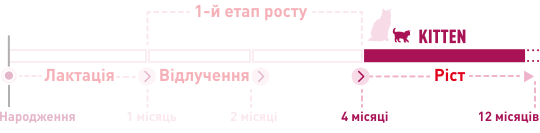

Royal Canin Завжди Поруч
Довга історія тісного партнерства
Історія нашого бренду почалася понад 50 років тому, у 1968 році, з одного ветеринарного лікаря, Жана Катарі, ідея якого полягала в тому, що їжа – це перші ліки. З того часу наша компанія зростала і розвивалася. Сьогодні Royal Canin представлена в більш ніж 150 країнах на всіх 5 континентах.
Ми підтримуємо тісні стосунки із професіоналами у світі котів і собак, зокрема з фахівцями із розведення. Як фахівців із розведення, ви неперевершений експерт, коли мова заходить про розуміння здоров’я та благополуччя котів. Ми працюємо разом для досягнення нашої спільної місії: Покращити здоров’я та благополуччя кожного кота, розширивши кордони харчування та знань шляхом взаємовигідного партнерства.
Стадії репродуктивного циклу кішки
Стадії репродуктивного циклу кішки мають свої особливості, і кожна з них потребує спеціального раціону.
Репродуктивний період кішки значною мірою залежить від пори року. Зазвичай він настає зі збільшенням світлового дня. Однак тічка у кішки може відбуватися через регулярні проміжки часу, якщо не відбулося запліднення.
Queen
Квін
Кішка під час
Раціон для кішки у період тічки, вагітності та лактації: спеціальне підтримання репродукції
Кішкам потрібен спеціальний раціон від запліднення, під час вагітності та лактації. У ці ключові періоди кішка потребує особливого раціону, який підтримує розвиток плода та її особливі енергетичні потреби.
-
Репродуктивне здоров’я
Специфічний комплекс нутрієнтів з адаптованим вмістом енергії, додаванням бета-каротину та фолієвої кислоти для задоволення специфічних потреб кішок підчас репродукції
-
Висока смакова привабливість
Стимулює кішку споживати достатню кількість корму для накопичення запасів енергії необхідної для майбутньої лактації
-
Підтримання мікробіома
Комбінація пребіотиків і високоперетравних білків, які сприяють балансу мікробіоти кишечника для підтримання здоров’я травної системи
-
Розвиток мозку та очей кошенят
Збагачений ДГК, омега-3 жирною кислотою, для підтримання розвитку мозку та здорового зору кошенят
Різні фактори впливають на зміни у харчовій поведінці кішки під час тічки або в кінці вагітності:
- Зміни впливу гормонів на мозок,
- Стрес під час тічки або перед пологами,
- Розмір матки в кінці вагітності (тиск на травну систему).
Спеціальний раціон для кішок у період тічки, вагітності та лактації враховує ці особливості та особливо смаковий профіль раціону
*Дослідження проводилося протягом 2019-2020 років серед 12 фахівців із розведення (36 домашніх тварин) у Франції, Великобританії, Португалії та США. Задоволення: Queen= 98%
Mother & babycat
Мазер & Бебікет
Mother & Babycat під частічки,
вагітності та
MOTHER & BABYCAT:Комплексний раціон
Під час лактації кішки мають специфічні харчові потреби, зокрема підвищені потреби в енергії. Кошенята також переживають інтенсивний період росту в середині лактації, під час якого їхні потреби задовольняються через молоко кішки.
-
Підтримання здоров’я Mother & Babycat
Це унікальний раціон, адаптований до високих енергетичних потреб кішки під час лактації для оптимального розвитку кошенят на першій стадії росту
-
Підтримання мікробіома
Комбінація пребіотиків і високоперетравних білків, які сприяють балансу мікробіоти кишечника для підтримання здоров’я травної системи
-
Розвиток мозку
Збагачений ДГК, омега-3 жирною кислотою, для підтримання розвитку мозку та здорового зору кошенят
Енергетичні потреби кішки змінюються під час Лактації:
- Раціон Mother & Babycat забезпечує адаптований рівень енергії,
- Задовольняють усі потреби кішки на стадії інтенсивного росту кошенят (близько 4 тижнів),
- Полегшують відлучення кошенят: ефект мімікрії. Кошенята захочуть споживати те ж, що і кішка, тому важливо з самого початку забезпечити здорове харчування.
Чи знаєте ви..?
Потреба в енергії регулярно збільшується під час вагітності.
Ближче до кінця вагітності та періоду лактації потреба в енергії зростає до максимуму приблизно на 4 тижні лактації, що пов’язано з піком інтенсивного росту кошенят.
* Дослідження проводилося протягом 2019-2020 років серед 12 фахівців із розведення (66 домашніх тварин) у Франції, Великобританії, Португалії та США. Задоволення: Mother&Babycat = 91,6%
Babycat milk
Бебікет мілк
Кошенята з 1 дня до кінця відлучення
Замінник молока містить ключові нутрієнти, що містяться в молоці матері
Материнське молоко – єдине джерело харчування для кошенят у перші тижні життя. Воно забезпечує усі поживні речовини, воду та енергію, необхідні для здорового розвитку та росту. ROYAL CANIN® Babycat Milk — це замінник молока, який підходить для вигодовування кошенят без матері або для підгодовування кошенят із великого приплоду (з 1 дня до кінця відлучення).
-
Розвиток мозку
З додаванням ДГК
-
Підтримання імунної системи
Комплекс антиоксидантів (додано вітаміни Е і С)
-
Підтримання мікробіома
Високоперетравні молочні білки та пребіотики (ФОС)
-

Легке розчинення
Під час струшуванняцей продукт миттєво і повністю розчиняється без грудочок, утворюючи однорідну рідину
Чи знаєте ви..?
Використовуючи замінник молока, важливо продовжувати забезпечувати всі особливі потреби кошенят. Вибирайте спеціальне молоко з основними поживними речовинами, які містяться в молоці кішки, щоб забезпечити якісний перехід від молока кішки до його замінника.
Порівняння складу молока кішки з коров’ячим молоком, козячим молоком і Royal Canin Babycat Milk.
*Dobenecker et al 1998 – Дані сильно відрізняються залежно від самої кішки, періоду лактації та розміру потомства.**Для розчинення додайте одну ложку (4 г) сухого молока на 20 мл води.
Mother & babycat
Мазер & Бебікет
Кошенята з 1 до 4 місяця
Забезпечення харчових потреб кошенят під час відлучення
У перші місяці життя потреби кошенят у поживних речовинах значно змінюються, що спричинено необхідністю підтримання періоду інтенсивного росту. Крім того, в період відлучення у кошенят розвивається травна система та харчова поведінка. У період від 4 до 12 тижнів після народження вони також схильні до імунного провалу, критичного періоду, коли кошенята мають низький рівень захисту від патогенів. Необхідна спеціально адаптована програма харчування для відлучення, поки розвивається їх травлення та імунітет.
-
Сильна імунна система
Раціони Mother & Babycat підтримують розвиток здорової імунної системи кошенят. До їхнього складу входить комплекс нутрієнтів з науково доведеною ефективністю, в т.ч. вітаміни Е і С
-
Підтримання здоров’я Mother & Babycat
Це унікальне харчове рішення, яке адаптоване до високих енергетичних потреб кішки наприкінці вагітності та під час лактації для оптимального розвитку кошенят протягом першої фази росту.
-
Розвиток мозку
Збагачений омега-3 жирною кислотою (ДГК), яка підтримує розвиток мозку та здорового зору кошенят.
-
Підтримання мікробіома
високоперетравні білки та пребіотики (ФОС).
Кошеня
Кошенята з 4 місяців
Харчове рішення для кошенят у перші місяці їхнього життя
Перші місяці життя кошеняти наповнені великими змінами, пошуками та новими відкриттями. Ось чому кошенята потребують оптимального харчування, яке допоможе їм рости і розвиватися. Збалансована формула раціону Royal Canin Kitten була спеціально розроблена для задоволення потреб кошенят протягом першого року життя. Раціон був спеціально розроблений, щоб підтримувати розвиток імунної системи кошенят, задовольнити їхні високі потреби в енергії та підтримати їх чутливе травлення.
-
Сильна імунна система
Підтримує розвиток здорової імунної системи кошенят за допомогою комплексу нутрієнтів з науково доведеною ефективністю, в т.ч. вітамінів Е і С.
-
Розвиток мозку
Збагачений омега-3 жирною кислотою (ДГК), яка підтримує розвиток мозку та здорового зору кошенят.
-
Підтримання мікробіома
високоперетравні білки та пребіотики (ФОС).